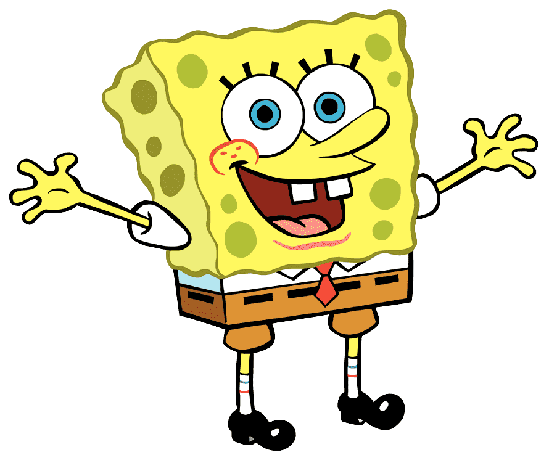

BOB ESPONJA

Es una esponja amarilla y cuadrada que ríe demasiado, el y Patricio molestan a Calamardo sin intención, ama trabajar en el Crustáceo Crujiente, hacer cangreburgers, cazar medusas en el campo de medusas y hacer pompas de jabón con Patricio, cuidar de Gary, trata de obtener su licencia de conducir pero casi siempre falla y le gusta practicar karate con Arenita. La casa de Bob Esponja es una piña. Es gran admirador de Sirenoman y Chico Percebe.
Regresar